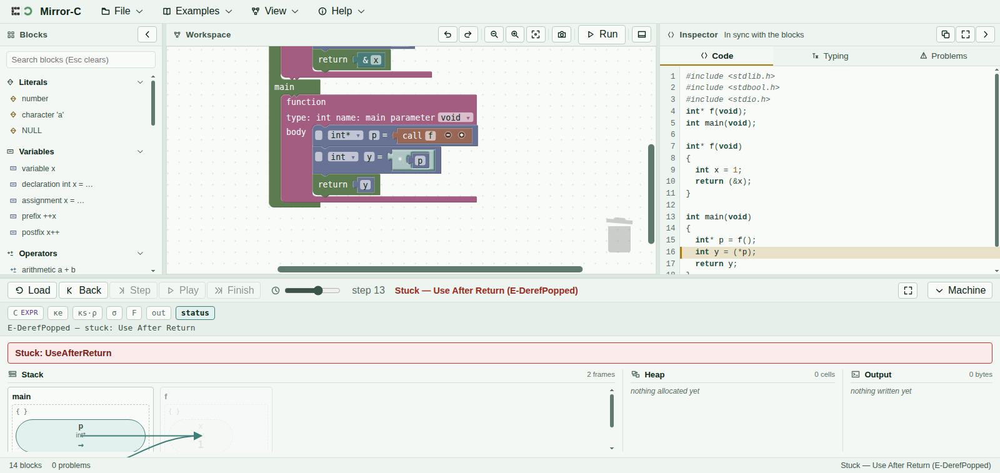

The picture is the machine, not a diagram of one
Every Step advances a real abstract machine — an extension of the substitution-free SF-CESK family, with an extra component for output. What the Stack, Heap and Output regions draw is a rendering function applied to that machine's own configuration, and nothing else feeds the picture.
The configuration
A configuration is a seven-part tuple: ⟨C, ρ, σ, κe,
κs, F, out⟩.
| Part | Holds |
|---|---|
C | Control — whatever is currently being evaluated or executed. |
ρ | The environment, mapping a name to the address holding it. |
σ | The store: address to cell. Its domain only grows — addresses are never reused (below). |
κe | The expression continuation — what is still owed to finish evaluating the expression in focus. |
κs | The statement continuation — the statements still to run once the current one finishes. |
F | The frame stack: one entry per function call still live, innermost last. |
out | Everything printed so far. Part of the configuration, not a side channel — see below. |
A step is a function Conf → (Conf, Event[]): one configuration in, one
configuration and a list of events out. “Small” is meant literally — evaluating
x + 1 is several steps, not one, because each operand's read lands in
κe as its own transition before the addition itself has both values
it needs.
One rule, one row
Every transition rule the machine can fire has exactly one row in a fixed event table, and every event that row can emit changes the picture in some observable way — there is no event that fires and draws nothing. The rule's name and the block it highlights are set inside the transition itself, not computed afterwards by inspecting the resulting value, which is what keeps the sentence above the machine regions and the highlighted block from ever drifting out of sync with what actually happened. That sentence is the fastest way to answer “what did the last Step actually do” without reading the picture cell by cell.
Output is state
printf's bytes live in out, the seventh part of the configuration
— they are not a log kept beside the machine, they are a component of it. That is why
pressing Back genuinely un-prints text from the Output region with no special-case code of
its own: the region renders the current configuration, stepping backward produces an earlier
configuration, and an earlier configuration simply has a shorter out.
Cells die but never disappear
The store's domain only grows. When a function returns, its frame's cells are marked dead rather than removed, and a dead cell is drawn greyed rather than erased. A pointer that still targets one keeps visibly pointing at something dead instead of silently becoming valid again the way a real allocator's address reuse would let it.
The landing example makes this concrete:
int *f(void) { int x = 1; return &x; }
int main(void) { int *p = f(); int y = *p; return y; }Thirteen steps in, Mirror-C stops:
Stuck — Use After Return (E-DerefPopped)
and the picture shows exactly why: f's frame is still drawn, greyed, with
x greyed inside it, because p still points there — two arrows
converging on a dead block. gcc -O0 and clang -O0 compile the same
program without a word and return 1.

f's frame stays drawn and
greyed after it returns, and p's arrow still lands on it.Twelve reasons, and the list is closed
Every stuck configuration carries a named Reason, and the set of names is fixed at twelve.
That closure is a property the project has actually had to defend, not just assert: adding
structs, enums, a second array extent, or union/const each turned out
to need zero new reasons — every new way a program can go wrong collapses into a
Reason the set already had.
| Reason | Fires when… |
|---|---|
NullDeref | a null pointer is dereferenced, indexed, or
followed through ->. |
UseAfterFree | a pointer into a freed heap cell is read or written through. |
UseAfterReturn | a pointer into a stack frame that has already returned is read or written through. |
FreeNonHeap | free is called on something that
was never returned by malloc. |
DoubleFree | free is called twice on the same
allocation. |
FreeIndeterminate | free is called on a pointer
whose own value was never written. |
IndeterminateRead | a cell is read that was declared but never assigned — or a union member that is not the one last written. |
OutOfBounds | an array read or write's index falls outside its declared extent, on either dimension of a two-extent array. |
DivByZero | a division or modulo has a zero right-hand side. |
FellOffNonVoid | a non-void function's body runs
out of statements without reaching a return. |
BreakOutsideLoop | a break is reached with no
enclosing loop. |
ContinueOutsideLoop | a continue is reached with
no enclosing loop. |
A stuck state is not the same thing as an ill-typed program.
Anything a real compiler would reject before running — a non-integer array index, for
instance — is refused at the block editor and never reaches a Reason at all;
the twelve names above are exclusively for programs that build cleanly and then meet genuine
undefined behaviour while running.
Why it matters
Twelve programs, one per reachable stuck reason, live in the project's divergence corpus, each
recording what gcc does, what clang does, and what Mirror-C does with
it — and those programs are recompiled against both real compilers on every test run, so
the comparison cannot go stale silently. The landing example above is one of the twelve; a
starker one is Freeing through one of two pointers, where liveness belongs to the
cell rather than to whichever alias you called free through, so every alias
goes stale at once — while gcc, given no reason to stop, keeps running and
returns a plausible-looking 72.
A program Mirror-C stops on may well run and print something plausible under gcc
or clang. That is the point: undefined behaviour permits both outcomes, and the
one that looks fine is the more dangerous of the two, because nothing about running it once
tells you it was ever unsafe.
What is proved, and what is not
The claim behind Mirror-C is deliberately narrow, and it is checked rather than assumed. Every source form has a transition rule; every rule has exactly one row in the event table; every stuck configuration's reason is one of the twelve above; and the rendering function is total and a function of the configuration alone — two configurations that render identically are guaranteed the same future, not merely observed to be so in the cases anyone tried.
That last guarantee was not true on the first attempt. A rendering that ignored the shape of
pending evaluation contexts made two genuinely different configurations —
0 + 0 having just reduced its left operand versus having just reduced its right one
— draw identically despite having different futures, which is exactly the property the
guarantee promises cannot happen. The repair renders the evaluation context explicitly, one entry
per pending frame, and the counterexample is now a regression test rather than an open
finding.
Not everything is proved to the same standard. The soundness of the layer that turns a mouse action into a machine-level edit is measured by exhaustive testing over a corpus of programs rather than established as a theorem, and the project says so plainly rather than rounding it up. Readers who want the full mechanization — the Coq development, the numbered findings and decisions — will find them in the paper's own repository rather than here; this help documents the tool, not the proof.